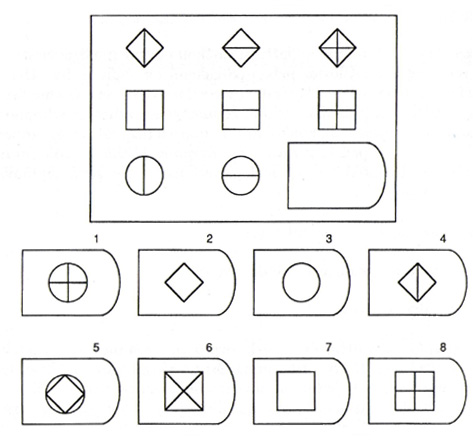
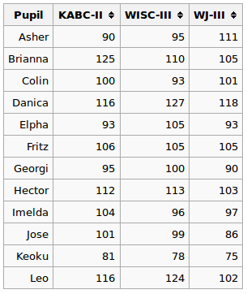
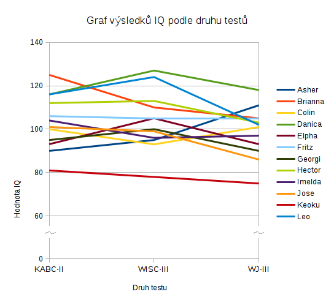
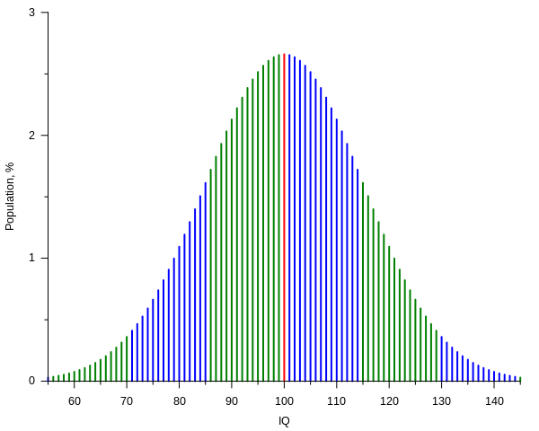

IQ je blbost
Číselná hodnota IQ je blbost. Přijde mi smutné, že na tuhle blbost spoléhá takové obrovské množství lidí, když je to přitom dost nicneříkající číslo.
Disclaimer
Tenhle blog nevznikl, protože bych měl podle IQ testu nějak nízké skóre, ale protože mi vážně vadí, co všechno jsou lidé na základě tohohle jednoho čísla vyvozovat.
Například hláška, se kterou jsem se setkal dnes:
O vysokých školách v případě programování obecně platí, že je přínosné na nich nějakou dobu studovat a odnést si onen všeobecný teoretický přehled, ale nemá v žádném případě nejmenší smysl se je pokoušet úspěšně dokončit, zejména nemáte-li pro akademickou dráhu v tomto oboru dostatečné IQ (tj. překračující hodnotu 140, i když ideální je tak 160 a víc) a tím spíš, pokud jde o takové šílenosti, jako je ten matfyz nebo třeba jaderná fyzika (prý už MFF UK není nejobtížnější a překonala ji právě FJFI ČVUT).
Tohle rozhodně není poprvé, co jsem něco podobného slyšel, dokonce jsem kdesi zahlédl i tabulky doporučující někomu jít na vysokou školu, či se na ní vykašlat podle hodnoty IQ.
Co mi tedy vadí;
Většina testů je příliš triviální
Skaidon byl génius. V šesti letech absolvoval jeden ze starých testů inteligence a dosáhl 180 bodů. Poté, co vyslechl blahopřání, údajně řekl: „Jestli chcete, udělám test na 190, teď už vím, jak to funguje.“
— ASHER, Neal. V pavučině. Vyd. 1. Frenštát p.R. [i.e. pod Radhoštěm]: Polaris, 2005, s. 296. Science fiction (Polaris). ISBN 80-7332-069-x.
Skaidon byl možná génius*, ale určit co přesně se po vás v IQ testu chce není nic těžkého a zvládne to imho většina lidí, když se nad tím trochu zamyslí. Dokonce se prodávají celé knihy typu „Poznejte své IQ a zlepšete výkonnost svého mozku“. Tyhle knihy imho nijak nepozvednou vaše kognitivní schopnosti, pouze vaší schopnost projít těmito testy.
Test, kde si můžu vybrat hodnoty z několika bodů testuje mé schopnosti asi tak, jako písemná zkouška v autoškole testuje mojí schopnost řídit auto a nevybourat se. Ano, nějaký význam co se týče značek to má, ale o mé schopnosti řídit auto to nevypovídá vůbec nic, proto se dělá ještě praktická zkouška. Ta ovšem u IQ testu ve většině případů chybí.

Paradoxně jediné dvě chyby, které jsem v testu měl spočívaly přesně v těhle úlohách mezi první desítkou otázek, nikoliv v těch pokročilejších, kde už skutečně musíte použít mozek a uvědomit že se jedná jen o jiné symboly pro sčítání a odčítání a prostě se po vás chce matematika druhé třídy. Buď jsem se prostě uklikl, nebo mi přecházely oči z čumění do černobílých vzorů, ale určitě to nebylo tím, že bych nepřišel na tuhle posloupnost.
Co ten test vlastně testuje? Jen naprostý dement by nenašel vzor, který odpovídá. Přesto se stane, že to mají lidé špatně. Díky malému počtu otázek se vaše chyba nezprůměruje a seřízne vám IQ dolu třeba o 5 bodů.
Většina z těch klasických testů je jen zkouška pozornosti, nikoliv vaší inteligence. O té to vypovídá jen docela málo. Pokud fakt chcete kvalitní test, použijte placené testy od mensy, nebo od psychologů, ne internetové testy.
Test se nedá opakovat
U mě ani nemá cenu, abych tenhle druh testů zkoušel opakovat. Zkoušel jsem to ze zvědavosti třikrát, poprvé jsem to myslel vážně, podruhé mě zajímalo hlavně, jak moc mají vliv různé odpovědi, rychlost s jakou to uděláte (jak se změní výsledek rovnice, když ho celý uděláte blbě, ale extrémně rychle?) a věk, který uvedete. Ten vzorec není zas tak složitý.
Kupodivu poslední test, který jsem zkoušel dopadl nejhůř, přestože jsem už pochopil ten princip. Proč? Zmenšilo se najednou mé IQ? Nikoliv, prostě jsem se nedokázal přinutit udržet pozornost a docela mě to nudilo.
Kdybych měl dělat stejný druh testu nyní, tak už je to pro mě jen o udržení pozornosti. Nehraje v tom roli má inteligence, ale jak jsem se ráno vyspal, jestli jsem měl před hodinou nějaký kofein, jestli se mi chce na záchod, nebo jestli je v místnosti přetopeno.
Hádám, že spousta lidí bude mít podobné problémy - pokud se před testem nají, tak se jim stáhne krev do žaludku a budou ospalí. Nebo je třeba přetopeno, špatně se vyspali, neměli ranní kafe, nebo jich naopak měli moc, či jsou nervózní. Výsledek třeba je, že se jim tak dobře nevede a tohle by mělo určovat jejich život? Vždyť i v pitomé škole se dělá za rok testů několik, aby se předešlo zkreslení jedním neúspěchem. Problém je, že u IQ testu to moc nejde, protože na něj prostě přijdete.
Inteligence kolísá
Jako malý jsem radši než člověče nezlob se hrál šachy. Nebyl jsem v tom nijak dobrý a většinou jsem prohrával, ale měl jsem z toho fajn pocit, protože to byla podstatně sofistikovanější hra nezáležící na náhodném hodu kostkou. Celkově jsem ale za život nehrál šachy víc jak čtyřicetkrát.
Jednoho dne jsem narazil na šachové demo, kde někdo naprogramoval šachy do 1kB JavaScript kódu:
Zkusil jsem hrát a prohrál jsem. Zkusil jsem to znova a prohrál jsem znova. Na desátý pokus jsem se dokázal dostat do situace, kde mám krále a střelce, ale nemůžu nahnat soupeřova krále, abych nad ním jasně zvítězil a nenaháněli jsme se do nekonečna. Zkusil jsem to dvacetkrát, třicetkrát, čtyřicetkrát, padesátkrát a pořád nic. Stejná situace, nebo jsem prohrál.
Pak jsem si šel lehnout. Po probuzení jsem hrál během asi desíti minut tři hry, přičemž při druhé mi došlo, že vždy hraji dost defenzivně a v podstatě jen reaguji na protivníka. Zkusil jsem to tedy jinak a konečně jsem jasně vyhrál, což mi bylo jasné šest tahů dopředu, protože jsem počítač zahnal do pasti, když jsem prohlédl jeho strategii hodnocení tahů.
Tím nechci říct, že bych byl nějak dobrý hráč šachů, ale že moje inteligence naprosto kolísá podle denní doby a podle toho, jak moc dlouho jsem vzhůru, jak jsem unavený, kolik jsem toho jedl a tak podobně. Někdy jedu na autopilota, speciálně třeba ke konci dne v práci, či cestou domu. To pak jdu ve stavu, kdy je můj mozek napůl ve spánku a kdybych měl v tuhle chvíli dělat IQ test, tak asi skončím jako totální retard, i když se jinak nevejdu do 7 bitů.
Hodnoty jsou v různých testech různé
Zábavná je tabulka na wikipedii, která hodnotí úspěšnost kandidátů v různých testech. Titulek nad ní tvrdí:
IQ scores can differ to some degree for the same person on different IQ tests, so a person does not always belong to the same IQ score range each time the person is tested.
— Variance in individual IQ classification (Anglická Wikipedie)
Volně přeloženo do češtiny;
Výsledky IQ se mohou do určité míry lišit pro stejnou osobu v různých IQ testech, takže člověk nemusí vždy patřit do stejné skupiny pokaždé, když je testován.

Co v téhle zábavné tabulce můžete vidět je, že třeba Asher měl první test horší, než následující a třetí pak udělal úplně nejlépe. Tím se dostal z průměru do nadprůměru, zatímco Brianna to měla přesně naopak, z nadprůměru časem spadla do průměru.

Co se z toho dá usuzovat o IQ jednotlivých dětí? Nic. Podle mě je z toho ale jasně vidět, že rozptyl měřené hodnoty v závislosti na testu, který by měl poskytovat +- stejné výsledky je v některých případech 20 bodů, což může být rozdíl mezi klasifikací retarda a průměrného člověka.
Hodnota není absolutní
Hodnota z testu pořízená v Čechách se nedá srovnávat s hodnotou pořízenou v Japonsku, protože testy jsou zkalibrované jinak, na jiné průměry populace. Co víc, tahle kalibrace se mění i v čase. Hodnota, kterou v IQ testu dostal váš otec před 30 lety je doslova neporovnatelná s hodnotou, kterou někdo získá v testu dnes.
U tohohle bodu se ještě zastavím, protože možná není zřejmé, proč jsou výsledky IQ testu doslova neporovnatelné.
Průměrné IQ je vždycky 100. To není výsledek měření, to je definice termínu „průměrné IQ“.

Když tvůrci IQ testů kalibrují, teoreticky by měli otestovat celou naší populaci, v praxi samozřejmě vezmou jen nějaký „reprezentativní“ vzorek, sečtou jejich výsledky a vydělí to počtem testovaných lidí, načež dostanou nějaké číslo. To číslo může být třeba 83, nebo 115, nebo nějaké úplně jiné náhodné číslo. Potom vezmou nějakou magickou konstantu a tu přidávají do metodiky výpočtu IQ tak dlouho, až průměru vyjde 100. Výsledek se pak prohlásí za test zkalibrovaný na průměrné IQ.
Chápete nyní, proč doslova není možné porovnávat výsledky mezi zeměmi, ani mezi výsledky pořízenými v různých dobách? Kalibrace testu se neustále mění, protože se nekalibruje k nule, ale na nějakou virtuální hodnotu 100, která navíc není lineárně rozložená, ale představuje střed křivky Gaussova rozložení. V takovém měření dávají výsledky smysl jen v rámci jedné kalibrace, což je u měření, jehož výsledkem je jedno jediné číslo docela překvapující.
Správně by to imho měl být vektor obsahující cosi jako [výsledek, rok, nenormalizovaný průměr, počet osob pro kalibraci, stát] a ani pak by to nebylo dokonalé, ale alespoň teoreticky porovnatelné. Jenže to se dostáváme k tomu, že dva stejné IQ testy podstoupené v Čechách nemusí být stejně nakalibrované, protože každá instituce si je může zkalibrovat jak chce. Chce to tedy například testovat jen v Mense a srovnávat to s výsledky Mensy ve stejné době, na stejné skupině respondentů.
Závěr
Nejsem proti testům inteligence jako takovým. Co mi silně vadí je snaha inteligenci vyjádřit jako číslo, podle kterého je potom snaha lidi porovnávat, navíc v tomhle případě, kdy je hodnota skoro neporovnatelná a s nulovým praktickým významem.
Podle mě by nikdy nemělo být výsledkem číslo, pouze hodnocení tak, jak je uvedeno třeba na wikipedii. Může mít smysl klasifikovat lidi třeba do skupin „velmi nízké“, „nižší“, „průměr“, „vysoké“ a „výjimečné“ a tu potom možná orientačně použít, ne však se snažit z toho udělat skalární hodnotu, na základě které by se dalo něco vyvozovat.
Co mi přijde vhodnější jsou testy inteligence, kde se řeší různé logické hádanky, těch ale většina není, nehledě na to, že vyžadují komplexnější vyhodnocení.
Většina lidí má bohužel tendence vše zjednodušovat a hledat výsledky, které budou odpovídat jednoduchému chápání světa. To mi přijde docela smutné, protože to neodvratně také znamená, že díky tomu budou automaticky vyvozovat nesmyslné důsledky (Franta má 128, ty jen 123, tudíž půjde na vysokou školu on, ne ty), což může někomu i uškodit.
Poznámky
* Nebyl, je to sci-fi a reálně neexistoval.
Odkazy a zdroje
- Inteligence a její měření (Časopis Mensy České Republiky)
- Inteligenční kvocient (Česká Wikipedie)
- IQ classification (Anglická Wikipedie)
- Intelligence quotient (Anglická Wikipedie)
- Stanford–Binet Intelligence Scales (Anglická Wikipedie)
- Woodcock–Johnson Tests of Cognitive Abilities (Anglická Wikipedie)

{kind=link}
{kind=link}
{kind=link}
{kind=link}
{kind=link}